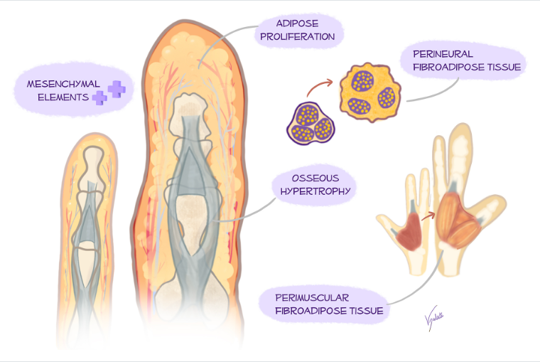
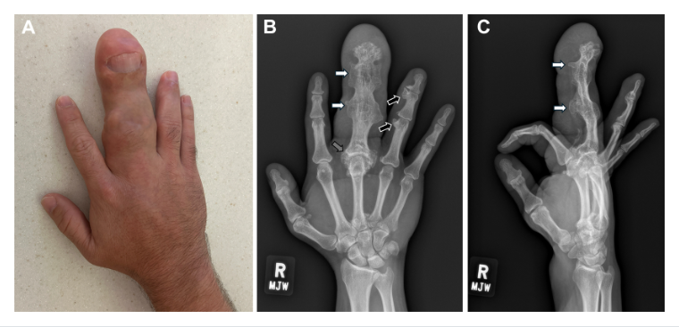
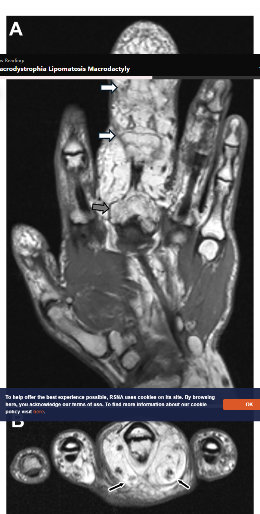

RadioGraphics Reader
Macrodystrophia Lipomatosis Macrodactyly
No abstract was available from the article page.
No abstract was available from the article page.

Figure 1. Proposed pathophysiology of MLM. Anomalous proliferation of mesenchymal elements in the affected digits in patients with macrodystrophia lipomatosis results in a disproportionate increase in fibroadipose tissue along the periosteum, bone marrow, nerve sheath, and muscle. Lipomatous degeneration, intrauterine segmentation anomalies, and somatic activating PIK3CA mutations are the proposed causes of MLM. Nevertheless, the exact cause and pathophysiology of MLM have not been well established. Download as PowerPoint
Figure 2. MLM in a 40-year-old male art instructor with a long history of right long finger macrodactyly, a previous surgical intervention in the early 1990s, and no significant functional limitations. (A) Photograph shows right long finger macrodactyly. Physical examination showed evidence of lipomatous hamartomas involving the median nerve well into the wrist and limited motion of the right long finger. Median nerve examination showed intact sensation, including sensation of the thumb and index finger. Vascular examination demonstrated adequate capillary refill of the digits bilaterally. (B, C) Posteroanterior (B) and lateral (C) hand radiographs show long finger macrodactyly and broadened phalanges with endosteal and periosteal bone deposition and marked overgrowth, consistent with macrodystrophia lipomatosa. Also seen is ankylosis of the distal interphalangeal (DIP) and proximal interphalangeal (PIP) joints (white arrows), with hypertrophic osteoarthritis of the metacarpophalangeal (MCP) joint (gray arrow in B) and increasing hypertrophic bone along the radial aspect of the ring finger at the interphalangeal joints (black arrows in B). Download as PowerPoint

Figure 3. MRI findings of MLM in a 40-year-old man (same patient as in Figure 2). (A) Coronal T1-weighted MR image of the right hand demonstrates macrodactyly of the right long finger with hypertrophy and ankylosis of the interphalangeal joints (white arrows) and advanced osteoarthritis with proliferative changes at the third metacarpophalangeal (MCP) joint (gray arrow). (B) Axial T1-weighted MR image of the right hand demonstrates marked enlargement and fatty infiltration of the median nerve in its proximal branches, extending distally within the digital nerves of the long finger (arrows). Download as PowerPoint
